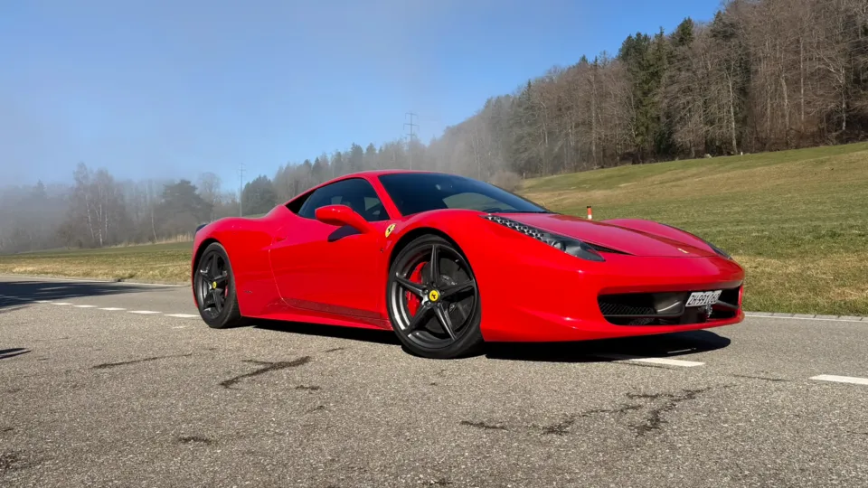

Alcuni clienti arrivano da noi per provare una supercar per la prima volta. Questi due amici partivano da un punto di riferimento completamente diverso. Negli anni avevano posseduto e guidato diverse auto ad alte prestazioni, comprese varie Lamborghini. Conoscevano bene accelerazioni impressionanti, motori spettacolari e il carattere molto diverso che ogni marchio può dare a una supercar.
Eppure, la Ferrari 458 Italia aveva sempre avuto un posto speciale per entrambi. Non perché fosse l'auto più nuova o potente che conoscevano, ma perché rappresenta un momento particolare nella storia Ferrari: motore aspirato, schema centrale, dimensioni compatte e una risposta estremamente diretta ai comandi del guidatore. La loro Breve Fuga di tre ore era l'occasione per capire se la 458 fosse davvero così speciale dal posto di guida come l'avevano sempre immaginata.
Tre ore costruite intorno alla strada, non al cronometro
Il giro da Nänikon attraverso Maur, Meilen e Pfannenstiel, fino al Dolder Grand di Zurigo, ha offerto esattamente il mix che cercavano: campagna, tratti scorrevoli, lago e due soste riconoscibili in città.

Quando conosci già le supercar, sono i dettagli a fare la differenza
Per un appassionato esperto, una Ferrari 458 non deve dimostrare il proprio valore con una partenza launch control o con un numero sulla scheda tecnica. Diventa più interessante tutto quello che succede nel mezzo: la rapidità dello sterzo, la risposta dell'acceleratore, la precisione del cambio quando si tira una paletta e il modo in cui il V8 cambia voce salendo di giri.
Era esattamente ciò che cercavano. Dopo anni trascorsi tra diverse supercar, non si trattava più di provare qualcosa di nuovo solo per il gusto della novità. Il fascino della 458 nasceva dalla sua reputazione di auto particolarmente viva e diretta. I primi chilometri hanno subito chiarito perché quella reputazione sia durata nel tempo.
Avevano già conosciuto supercar più recenti e molto potenti, ma la 458 offriva qualcosa di diverso: immediatezza, suono e la sensazione che tra il guidatore e l'auto ci siano pochissimi filtri.
Da Maur a Meilen. Uscire rapidamente dal ritmo di Zurigo
Da Nänikon sono passati attraverso Maur in direzione Meilen. Uno dei punti forti di questo itinerario è la rapidità con cui cambia l'atmosfera. Non serve un passo alpino né un'intera giornata: in poco tempo le strade diventano più verdi, tranquille e varie.
La strada verso Meilen ha dato loro il tempo di prendere confidenza con la Ferrari. La 458 sembra compatta dal posto di guida, l'avantreno reagisce immediatamente e il V8 aspirato rende speciale anche un'accelerazione moderata. Su strade come queste il piacere arriva dal ritmo e dalla precisione, non dalla velocità estrema.
Da Meilen a Pfannenstiel. Il tratto migliore del giro
Il tratto da Meilen verso Pfannenstiel è diventato il loro preferito. Rispetto alle sezioni più spezzate che attraversano i centri abitati, qui la strada si apre maggiormente e passa più tempo nei normali limiti extraurbani. Questo lascia più spazio per apprezzare il ritmo della Ferrari restando comodamente entro le regole svizzere.
È un abbinamento particolarmente riuscito con la 458, perché l'auto comunica moltissimo senza bisogno di andature estreme. Piccoli cambi di pendenza, curve pulite e brevi tratti aperti bastano per sentire sterzo, risposta del motore ed equilibrio. Per chi conosce già auto molto potenti, spesso sono proprio queste strade a essere più interessanti di un semplice rettilineo.
La fotografia qui sopra è stata scattata proprio su questa parte del percorso. Mostra anche perché il giro funziona bene visivamente: la Ferrari si trova improvvisamente immersa nella campagna, anche se Meilen e il Lago di Zurigo sono a pochi minuti.
L'itinerario completo della Breve Fuga
La mappa mostra il percorso in modo volutamente semplice: Maur, Meilen e Pfannenstiel, poi il rientro verso Zurigo e il Dolder. È impostata in modo che Google Maps segua le strade effettivamente percorse invece di scegliere semplicemente il collegamento più veloce.
Da Pfannenstiel di nuovo verso Zurigo
Dopo Pfannenstiel, il percorso ha cambiato carattere ancora una volta. Sono tornati verso Zurigo fermandosi vicino all'Opera. È un contesto completamente diverso da Pfannenstiel, e proprio questo contrasto rende completo un itinerario breve: nello stesso noleggio, la 458 passa da strade aperte al lungolago e poi a una delle ambientazioni urbane più riconoscibili di Zurigo.
Da lì sono saliti verso il Dolder Grand. La salita ha aggiunto un ultimo cambio di ritmo prima del rientro a Nänikon: strade cittadine più strette, dislivello e una destinazione che si abbina particolarmente bene alla presenza di una Ferrari 458 Italia Rosso Corsa.

Perché consigliano questo giro come Breve Fuga
Alla fine delle tre ore erano entusiasti della Ferrari, ma anche dell'itinerario scelto. È una distinzione importante. Anche una grande auto può risultare sprecata su un percorso mal pianificato, pieno di traffico o troppo ambizioso per il tempo disponibile.
Questo giro ha funzionato perché non ha cercato di trasformare tre ore in un tour di un'intera giornata. Maur e Meilen hanno aperto la fuga, la strada verso Pfannenstiel ha offerto il tratto di guida più piacevole, mentre Opera e Dolder hanno dato al rientro un finale elegante. Molta varietà, senza chilometri inutili.
Per due persone che negli anni avevano già posseduto e provato diverse supercar, comprese Lamborghini, la 458 è comunque riuscita a sentirsi diversa. Il loro debole di lunga data per questo modello non è stato deluso. Anzi, proprio su questo percorso è diventato ancora più chiaro perché la 458 continui ad avere un posto speciale tra gli appassionati: non per un momento estremo, ma per il modo in cui sa trasformare una strada semplicemente bella in qualcosa da ricordare.
Organizza una Breve Fuga simile vicino a Zurigo
Per un giro compatto tra campagna, Lago di Zurigo e una conclusione in città, Maur–Meilen–Pfannenstiel è un'ottima opzione per la nostra Breve Fuga di tre ore. Puoi anche scoprire il nostro noleggio Ferrari 458 Italia a Zurigo oppure richiedere direttamente la disponibilità.
Domande frequenti
Tre ore sono sufficienti per il percorso Meilen–Pfannenstiel?
Sì, può funzionare molto bene come Breve Fuga mirata da Nänikon. Il traffico di Zurigo può però cambiare i tempi, quindi l'itinerario va considerato come riferimento flessibile e non come programma rigido.
Perché il tratto Meilen–Pfannenstiel è piacevole con una Ferrari 458?
La strada combina pendenze, cambi di direzione e tratti extraurbani più aperti rispetto ai centri abitati vicini. Questo permette di apprezzare sterzo, risposta dell'acceleratore e V8 aspirato della 458 senza bisogno di velocità estreme.
Luxury Obsession può suggerire un itinerario per un noleggio Ferrari breve?
Sì. Possiamo suggerire percorsi in base a durata, traffico, meteo e tipo di esperienza desiderata. Per tre ore preferiamo giri realistici che lascino abbastanza tempo per godersi la Ferrari senza fretta.